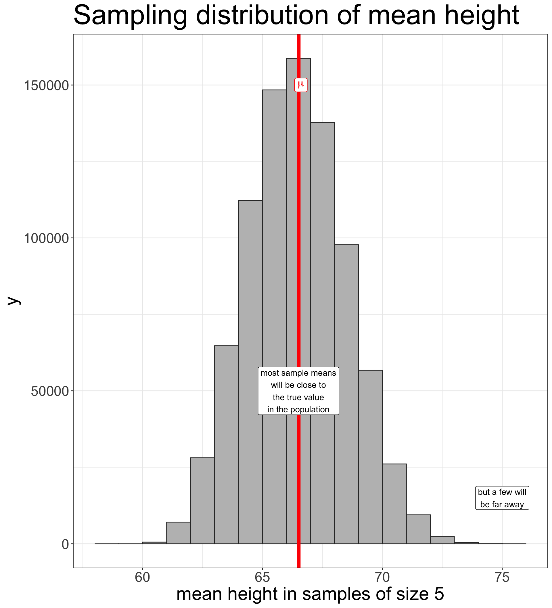
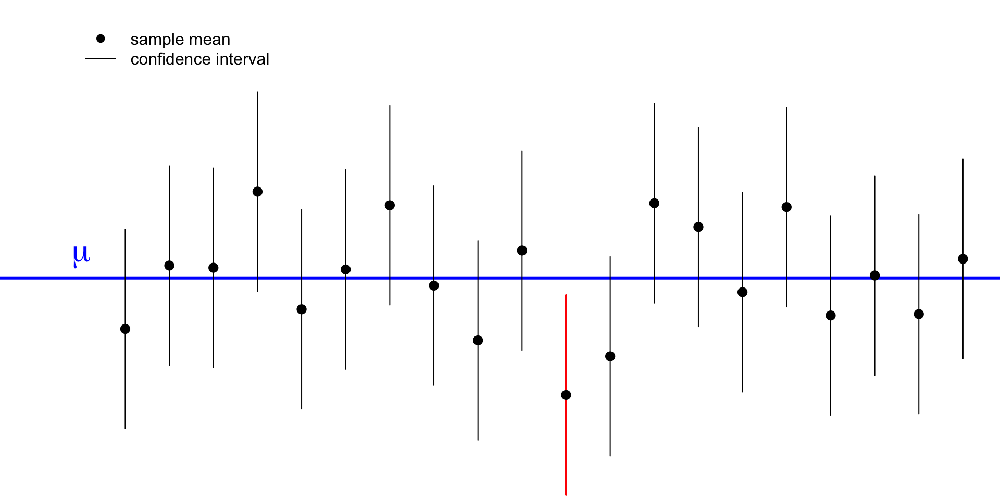

100*round(prop.table(table(politics$brcitizen)),3)
Oppose Neither Favor
39.6 28.6 31.8 Sociology 312/412/512, University of Oregon
We can look at the results from our politics dataset:
About 31.8% of respondents to the American National Election Study (ANES) favored ending birthright citizenship.
| Measure | Parameter | Statistic |
|---|---|---|
| mean | \(\mu\) | \(\bar{x}\) |
| proportion | \(\rho\) | \(\hat{p}\) |
| standard deviation | \(\sigma\) | \(s\) |

Something about our data collection procedure biases our results systematically.

Just by random chance we happened to draw a sample that is very different from the population on the parameter we care about.
You draw a simple random sample of 100 people from the US population and calculate their mean years of education (\(\mu\)). There are three kinds of distributions involved in this process:
Lets say I wanted to sample two students to estimate class height. In a class of 42 students, how many unique samples of size 2 exist?
| Distribution | Mean | Standard Deviation |
|---|---|---|
| Population Distribution | 66.52 | 4.87 |
| Sampling Distibution (n=2) | 66.52 | 3.36 |
| Sampling Distribution (n=3) | 66.52 | 2.71 |
| Sampling Distribution (n=4) | 66.52 | 2.32 |
| Sampling Distribution (n=5) | 66.52 | 2.04 |
As the sample size increases, the sampling distribution of a sample mean becomes a normal distribution.
There are three different kinds of standard deviations involved here, one that corresponds to each of the types of distributions.
| Distribution | Notation | Description |
|---|---|---|
| Population | \(\sigma\) | Unknown population standard deviation |
| Sample | \(s\) | Known sample standard deviation that hopefully approximates \(\sigma\) |
| Sampling | \(\sigma/\sqrt{n}\) | Standard error: Standard deviation of the sampling distribution |
The standard error gives us an estimate of the strength of potential random bias in our sample.

If I construct the following interval:
\[\bar{x}\pm1.96*\sigma/\sqrt{n}\] 95% of all possible samples that I could have drawn will contain the true population mean \(\mu\) within this interval.

We call the interval of \(\bar{x}\pm1.96*\sigma/\sqrt{n}\) the confidence interval. What does it mean?

If this seems confusing, you are normal.
The confidence interval is given by \(\bar{x}\pm1.96*\sigma/\sqrt{n}\).
But we don’t know \(\sigma\) because this is the population standard deviation. What can we do?
We can calculate \(\bar{x}\pm1.96*s/\sqrt{n}\).
However, this equation is no longer correct because we need to adjust for the added uncertainty of using a sample statistic where we should use a population parameter.
The actual formula we want is:
\[\bar{x} \pm t*s/\sqrt{n}\]
where \(t\) is the t-statistic and will be a number somewhat larger than 1.96.
The t-statistic you get depends on two characteristics:
In R, you can calculate the t-statistic with the qt command. Lets say we wanted the t-statistic for our crime data with 51 observations:
First we need to calculate all the statistics we need:
We are 95% confident that the true mean property crime rate across states is between 2278.1 and 2647.4 crimes per 100,000.
We did the math right, but this statement is still nonsense. Why?
Calculate numbers that we need for later:
| results | |
|---|---|
| sample mean | 46.909 |
| sample standard deviation | 44.584 |
| sample size (n) | 11785.000 |
| standard error | 0.411 |
| t-statistic | 1.960 |
We can construct confidence intervals for any statistic whose sampling distribution is a normal distribution. This includes:
The general form of the confidence interval is given by:
\[\texttt{(sample statistic)} \pm t*(\texttt{standard error})\]
The only trick is knowing how to calculate the standard error and degrees of freedom for the t-statistic for each particular statistic.
| Type | SE | df for \(t\) |
|---|---|---|
| Mean | \(s/\sqrt{n}\) | \(n-1\) |
| Proportion | \(\sqrt\frac{\hat{p}*(1-\hat{p})}{n}\) | \(n-1\) |
| Mean Difference | \(\sqrt{\frac{s_1^2}{n_1}+\frac{s_2^2}{n_2}}\) | min( \(n_1-1\), \(n_2-1\) ) |
| Proportion Difference | \(\sqrt{\frac{\hat{p}_1*(1-\hat{p}_1)}{n_1}+\frac{\hat{p}_2*(1-\hat{p}_2)}{n_2}}\) | min( \(n_1-1\), \(n_2-1\) ) |
| Correlation Coefficient | \(\sqrt{\frac{1-r^2}{n-2}}\) | \(n-2\) |
What proportion of voters support removing birthright citizenship?
Use prop.table to get the sample proportion:
Oppose Neither Favor
0.3957989 0.2860515 0.3181496 What is the difference in sexual frequency between married and never married individuals?
Use tapply to get means by groups and then calculate the difference you want:
Use table to get sample size by group:
Calculate standard error, t-statistic, and confidence intervals:
I am 95% confident that, among American adults, married individuals have sex between 4.98 and 9.04 fewer times per year than never married individuals, on average.
What is the difference in support for removing birthright citizenship between those who have served in the military and those who have not?
Use prop.table to calculate proportions for each group:
Calculate standard error and t-statistic:
I am 95% confident that the percent in support for removing birthright citizenship is between 8.2% and 17.7% higher among who have served in the military than those who have not.
What is the correlation between age and wages among US workers?
Use nrow to get sample size and then calculate standard error and t-statistic.
I am 95% confident that the true correlation coefficient between age and wages among US workers is between 0.214 and 0.224.

We know what the sampling distribution should look like, but we don’t know its center (the true population parameter).
So we set up a game of make-believe:

\[H_0: \rho=0.083\]
I use the Greek \(\rho\) to indicate the population proportion of winners. I will use \(\hat{p}\) later to represent the proportion observed in my sample.
]
With a sample size of 100, it should be normally distributed.
With a sample size of 100, it should be normally distributed.
The center of the distribution is the true population parameter assuming \(H_0\) is true. In this case, that is 0.083.
With a sample size of 100, it should be normally distributed.
The center of the distribution is the true population parameter assuming \(H_0\) is true. In this case, that is 0.083.
As we learned in the previous section, the standard error is given by: \[\sqrt\frac{0.083*(1-0.083)}{100}=0.0276\]
We determine how far our sample proportion is from the center in terms of the number of standard errors.
\[\frac{\hat{p}-\rho}{SE}=\frac{0.05-0.083}{0.028}=-1.18\]
We determine how far our sample proportion is from the center in terms of the number of standard errors.
\[\frac{\hat{p}-\rho}{SE}=\frac{0.05-0.083}{0.028}=-1.18\]
What proportion of sample proportions are this low or lower?

We determine how far our sample proportion is from the center in terms of the number of standard errors.
\[\frac{\hat{p}-\rho}{SE}=\frac{0.05-0.083}{0.028}=-1.18\]
What proportion of sample proportions are this low or lower?
We also need to take account of sample proportions this far away in the opposite direction. This is called a two-tailed test.
We determine how far our sample proportion is from the center in terms of the number of standard errors.
\[\frac{\hat{p}-\rho}{SE}=\frac{0.05-0.083}{0.028}=-1.18\]
What proportion of sample proportions are this low or lower?
We also need to take account of sample proportions this far away in the opposite direction. This is called a two-tailed test.
The area in the tails is called the p-value.
The p-value tells you the probability of getting a statistic this far away or farther from the the assumed true population parameter, assuming the null hypothesis is true.
In my case:
Assuming the null hypothesis is true, there is a 24% probability that I would have gotten a sample proportion (0.05) this far or farther from the true poplation paramter (0.083).
We use the pt command to get the area in the lower tail and multiply by two to get both tails:
The hypothesis test we are most interested in is whether the association we observe between two variables in our sample holds in the population.

Is there a difference in sexual frequency between married and divorced individuals? Formally, my null hypothesis is:
\[H_0: \mu_M-\mu_D=0\]
Where \(\mu_M\) is the population mean sexual frequency of married individuals and \(\mu_D\) is the population mean sexual frequency of divorced individuals.
Never married Married Divorced Widowed
53.45574 46.44548 47.87926 25.88266 [1] -1.43378In my sample, married individuals have sex about 1.4 fewer times per year than divorced individuals, on average. Is this difference far enough from zero to reject the null hypothesis?
I gather terms to calculate the standard error.
I can now calculate how many standard errors my sample mean difference is from zero:
I then feed the negative version of this number into the pt formula and multiply by two to get my p-value:
Assuming that the true sexual frequency difference between married and divorced individuals is zero in the population, there is a 20.2% chance of observing a sample sexual frequency difference of 1.4 times per year or larger between the two groups in a sample of this size. Thus, I fail to reject the null hypothesis there there is no difference in the average sexual frequency between married and divorced individuals in the US.
Is there a difference in support for removing birthright citizenship between those who have served in the military and those who have not?
No Yes
Oppose 0.4065643 0.3071895
Neither 0.2893065 0.2592593
Favor 0.3041292 0.4335512Assuming that there is no difference in the US population between those who have served in the military and those who have not in support for removing birthright citizenship, there is less than a 0.000002% chance of observing a sample difference in proportion of 13.1% or greater by random chance in a sample of this size. Thus, I reject the null hypothesis there there is no difference in support for removing birthright citizenship between those who have served in the military and those who have not.
Is there a relationship between a person’s age and their wages in the US?
Assuming no association between a person’s age and their wage in the US, there is almost 0% chance of observing a correlation coefficient between age and wages of 0.219 or larger in absolute magnitude in a sample of this size. Therefore, I reject the null hypothesis that there is no relationship between a person’s age and their wages in the US population.
Sociology 312/412/512, University of Oregon